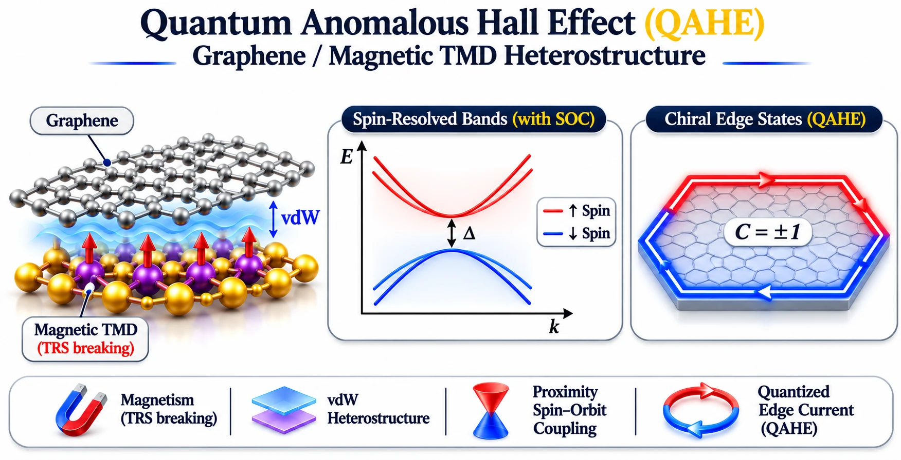

Ph.D. candidate · Physics · University of Maine
Hi, I'm
Muhammad
Ahmad Ishaq.
I study how electronic structure and interfacial interactions shape the physics of two-dimensional materials and the possibilities for future semiconductor devices.
Current focus: first-principles modeling, graphene-based heterostructures, magnetic proximity, spin–orbit coupling, and quantum materials.

01 / RESEARCH
From materials physics
to electronic functionality.

CURRENT DOCTORAL RESEARCH
Proximity effects in graphene-based heterostructures
Exploring how magnetic exchange and spin–orbit coupling at atomically thin interfaces can modify low-energy electronic states in graphene.
DFT · OpenMX · electronic structure · HPC
Read project overview ↗02 / PROJECTS
Selected research & engineering.
Ga-doped AlSb
First-principles structural, electronic, and optical response of a III–V semiconductor alloy.
Explore case study ↗ 02 / PUBLISHED RESEARCHIn-doped AlSb
Electronic structure and optoelectronic properties investigated with FP-LAPW calculations.
Explore case study ↗ 03 / HARDWARE & TEACHINGDigital electronics
Circuit design and digital logic portfolio—organized for project-by-project additions.
Explore project archive ↗03 / PUBLICATIONS
Research published in journals.
First-principles calculations to investigate structural, electronic and optical properties of In-doped aluminium antimonide alloy
Optical and Quantum Electronics
Correlation between structural, electronic, and optical response of Ga-doped AlSb
The European Physical Journal B
LET'S CONNECT
Interested in research, devices,
or technical collaboration?
Open to conversations about industry R&D, academic collaboration, and future research opportunities.